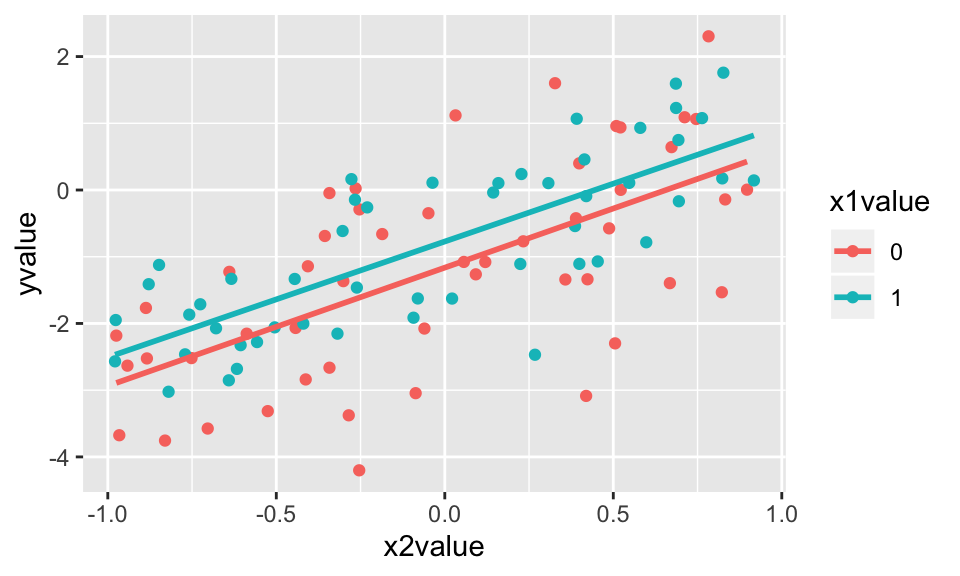
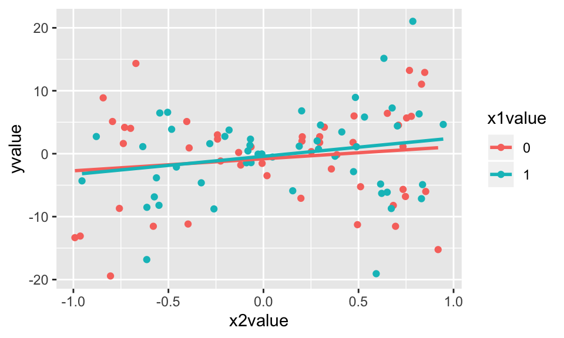
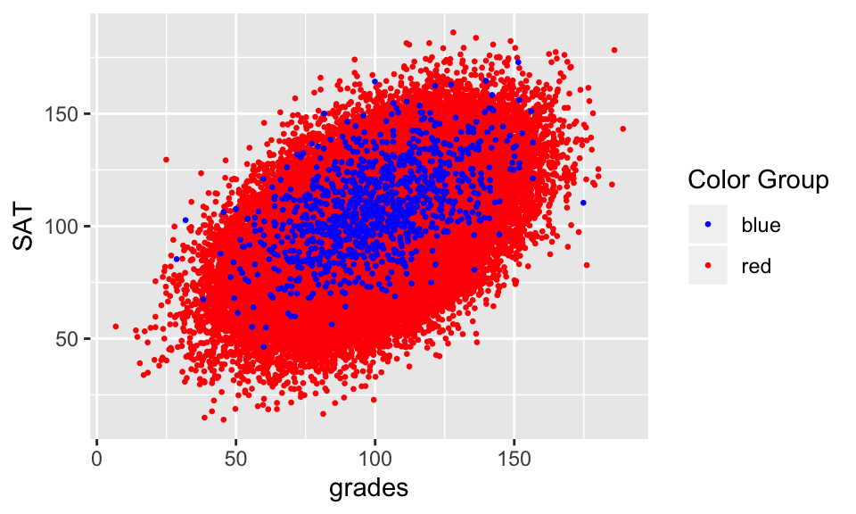
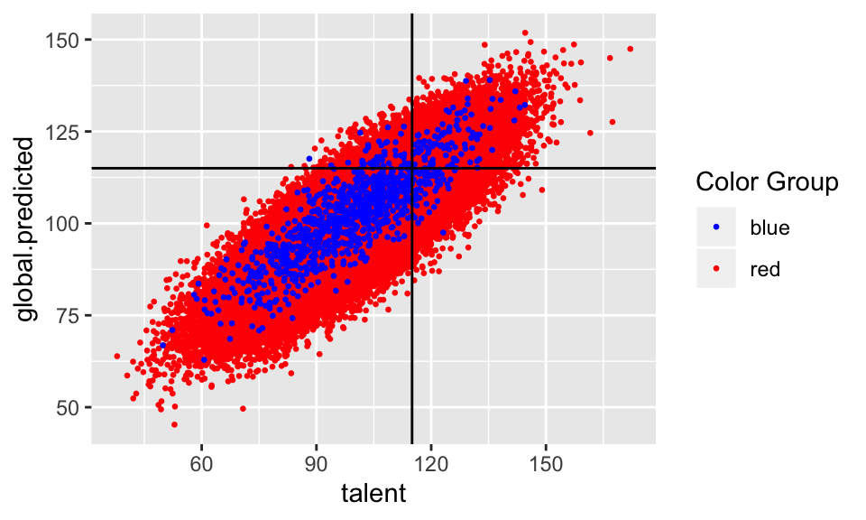
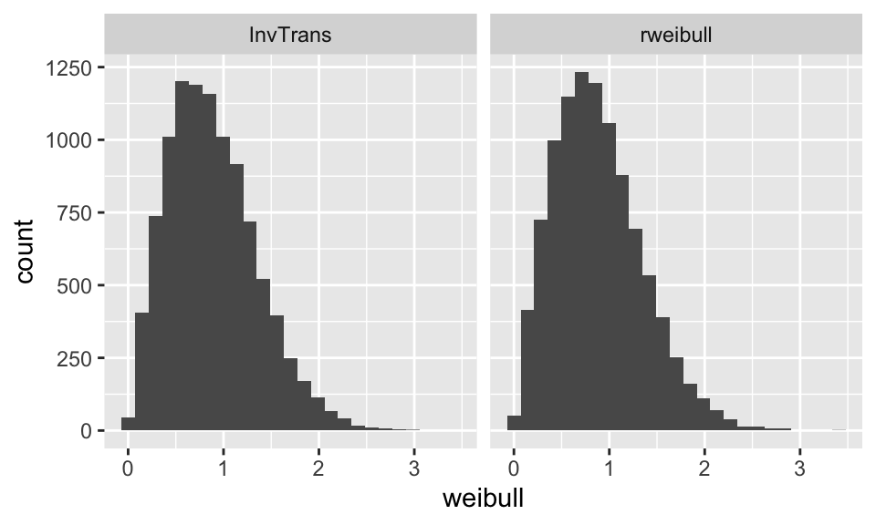

Chapter 4 Simulating
4.1 9/24/19 Agenda
- Why simulate?
- What makes a good simulation
- pigs / blackjack examples
Below, computer simulations will be used for two main objectives:
- To understand complicated models
- To assess sensitivity of procedures
We can use simulation studies to understand complex estimators, stochastic processes, etc. Often times, such analytic solutions exist in theory, but are extremely complicated to solve. In particular, as slight variations to the model are added, the simulation is often trivial to change whereas the analytic solution often becomes intractable. Similarly, repeated applications of a procedure (e.g., linear regression) to a scenario (e.g., a dataset, a set of parameters, etc.) can provide important insight into how the procedure varies / behaves.
4.2 Simulating Complicated Models
Simulation is done to model a scenario which allows us to understand random behavior without actually replicating the entire study multiple times or trying to model the process analytically.
For example, what if you have a keen interest in understanding the probability of getting a single during room draw? Or getting a single on north campus? You wouldn’t actually run room draw thousands of times to find your probability of getting a single room. Similarly, the situation (e.g., room draw) may have too much information (e.g., all the different permutations of integers assigned to groups of 3 or 4 people) to model (easily) in a closed form solution. With a few moderate assumptions (proportion of students in groups of 1, 2, 3, 4; probability of choosing dorm X over dorm Y; random allocation of integers to students; etc.) it is straightforward to simulate the scenario thousands of time and measure the proportion of times your rank (47) will give you the room you want (single in Sontag).
Example 1 Consider the following problem from probability. Two points are selected randomly on a line of length \(L\) so as to be on opposite sides of the midpoint of the line. [In other words, the two points \(X\) and \(Y\) are independent random variables such that \(X\) is uniformly distributed over \((0,L/2)\) and \(Y\) is uniformly distributed over \((L/2, 1)\).] Find the probability that the 3 line segments from \(0\) to \(X\), from \(X\) to \(Y\), and from \(Y\) to \(L\) could be made to form the three sides of a triangle. (Note that three line segments can be made to form a triangle if the length of each of them is less than the sum of the lengths of the others.)
The joint density is: \[ f(x,y) = \begin{cases} \frac{4}{L^2} & 0 \le x \le L/2, \, L/2 \le y \le L \\ 0 & else \end{cases} \]
The three pieces have lengths: \(X\), \(Y- X\) and \(L - Y\). Three conditions need to be satisfied in order that the three pieces form a triangle:
\[\begin{eqnarray*} X + (Y- X)&>& (L - Y) \Rightarrow Y > L - Y \Rightarrow 2 Y > L \Rightarrow Y > L/2 \\ X + (L-Y ) &>& Y - X \Rightarrow 2X + L > 2Y \Rightarrow X + \frac{L}{2} > Y \\ Y + (L - Y) &>& X \Rightarrow L > X \end{eqnarray*}\]
The first and third conditions are always satisfied, so we just need to find the probability that \(Y\) is below the line \(X + \frac{L}{2}\). The density is the same as in the previous problem, so, as before, we just need to find the area of the region below the line that is within the square \([0, L/2] \times [L/2, L]\), and then multiply it by \(\frac{4}{L^2}\).
Area = \(\displaystyle{ \frac{1}{2}\frac{L}{2}\frac{L}{2} = \frac{L^2}{8} }\).
Thus, the probability is
\[\begin{eqnarray*} \int_{area} f(x,y)dxdy = \frac{4}{L^2} \frac{L^2}{8} = \frac{1}{2}. \end{eqnarray*}\]
What happens for different values of \(f(x,y)\)? For example, if \(x\) and \(y\) have Beta(3,47) distributions on [0,.5] and [.5,1]? Simulating the probability in R is quite straightforward. What is the confidence bounds on the point estimates for the probabilities?? [n.b., we could simulate repeatedly to get a sense for the variability of our estimate!]
sticks <- function() {
pointx <- runif(1,0,.5) # runif is "random uniform", not "run if"
pointy <- runif(1,.5,1)
l1 <- pointx
l2 <- pointy-pointx
l3 <- 1 - pointy
max(l1,l2,l3) > 1-max(l1,l2,l3)}
sum(replicate(100000, sticks())) / 100000## [1] 0.50257sticks_beta <- function() {
pointx <- rbeta(1,3, 47) / 2 # rbeta is random beta
pointy <- (rbeta(1, 3, 47) + 1)/2
l1 <- pointx
l2 <- pointy-pointx
l3 <- 1 - pointy
max(l1,l2,l3) > 1-max(l1,l2,l3)}
sum(replicate(100000, sticks_beta())) / 100000## [1] 0.49774Example 2 Or consider the problem where the goal is to estimate \(E(X)\) where \(X=\max \{ k: \sum_{i=1}^k U_i < 1 \}\) and \(U_i\) are uniform(0,1). The simulation problem is quite straightforward. Look carefully at the pieces. How are they broken down into steps? Notice that the steps go from inside out.
- Set k (the number of random numbers) equal to zero. And the running sum to zero.
- Generate a uniform random variable.
- Add the random variable to the running sum. Repeat steps 1 and 2 until the sum is larger than 1.
- Figure out how many random variables were needed to get the sum larger than 1.
- Repeat the entire process many times so as to account for variability in the simulation.
- Use the law of large numbers to conclude that the average of the simulation approximates the expected value.
allk <- c()
for(i in 1:1000){
k <- 0; sumU <- 0
while(sumU < 1) {
sumU <- sumU + runif(1)
k <- k+1 }
allk <- c(allk, k-1) }
mean(allk)## [1] 1.7074.2.1 Goals of Simulating Complicated Models
The goal of simulating a complicated model is not only to create a program which will provide the desired results. We also hope to be able to code such that:
- The problem is broken down into small pieces
- The problem has checks in it to see what works (run the lines inside the if statements!)
- Simple code is best
4.2.2 Examples of Pigs and Blackjack
4.2.2.1 Pass the Pigs
- Familiarize yourself with how to play Pass the Pigs at http://www.hasbro.com/common/instruct/passthepigs.pdf and https://en.wikipedia.org/wiki/Pass_the_Pigs.
- For more information on how to play Pass the Pigs, google online resources and see the following manuscript, http://pubsonline.informs.org/doi/pdf/10.1287/ited.1120.0088 Analytics, Pedagogy and the Pass the Pigs Game, (2012), Gorman, INFORMS Transactions on Education 1.
- More sophisticated modeling: http://www.amstat.org/publications/jse/v14n3/datasets.kern.html
- Some strategies for playing: http://passpigs.tripod.com/strat.html (The link has other stuff, too.)
4.2.2.2 Blackjack
- Example and code come from **Data Science in R: a case studies approach to computational reasoning and problem solving*, by Nolan and Temple Lang.
- Chapter 9 Simulating Blackjack, by Hadley Wickham
- All R code is online at http://rdatasciencecases.org/
- More about the game of blackjack, there are many online resources that you can use to learn about the came. Two resources that Nolan and Temple Lang recommend are http://wizardofodds.com/games/blackjack/ and http://hitorstand.net/.
4.3 9/26/19 Agenda
- Sensitivity of mathematical procedures to technical conditions
- Understanding bias in modeling
- Generating random numbers
4.4 Simulating to Assess Sensitivity
As a second use of simulations, we can assess the sensitivity of parameters, model assumptions, sample size, etc. Ideally, the results will be summarized graphically, instead of as a table. A graphical representation can often provide insight into how parameters are related, whereas a table can be very hard to read.
Consider the following simulation where the top 10 GOP candidates get to participate in the debate, and the remaining 6 are kept out (example taken for debate on August 6, 2015). The write-up (and example) is a few years old, but the process is identical to the process used for deciding who is eligible for the 2020 Democtratic debates for president. http://www.nytimes.com/interactive/2015/07/21/upshot/election-2015-the-first-gop-debate-and-the-role-of-chance.html?_r=0
A candidate needed to get at least two percent support in four different polls published from a list of approved pollsters between June 28 and August 28, 2019, which cannot be based on open-ended questions and may cover either the national level or one of the first four primary/caucus states (Iowa, New Hampshire, Nevada, and South Carolina). Only one poll from each approved pollster counted towards meeting the criterion in each region. Wikipedia
](figs/GOPdebate.jpg)
Figure 1.5: For the 2016 election the Republican primary debates allowed only the top 10 candidates, ranked by national polls NYT
4.4.1 Technical Conditions
Definitions
p-value is the probability of obtaining the observed data or more extreme given the null hypothesis is true.
confidence interval is a range of values collected in such a way that repeated samples of data (using the same mechanism) would capture the parameter of interest in \((1-\alpha)100\)% of the intervals.
Examples
Equal variance in the t-test Recall that one of the technical conditions for the t-test is that the two samples come from populations where the variance is equal (at least when var.equal=TRUE is specified). What happens if the null hypothesis is true (i.e., the means are equal!) but the technical conditions are violated (i.e., the variances are unequal)?
pvals <- c()
reps <- 10000
for(i in 1:reps){
x1 <- rnorm(10, mean=47, sd=1)
x2 <- rnorm(10, mean=47, sd=1)
pvals <- c(pvals, t.test(x1,x2, var.equal=TRUE)$p.value) }
sum(pvals < .05)/reps## [1] 0.0468pvals <- c()
reps <- 10000
for(i in 1:reps){
x1 <- rnorm(10, mean=47, sd=1)
x2 <- rnorm(10, mean=47, sd=100)
pvals <- c(pvals, t.test(x1,x2, var.equal=TRUE)$p.value) }
sum(pvals < .05)/reps## [1] 0.067Equal variance in the linear model
Consider the following linear model with the points normally distributed with equal variance around the line. [Spoiler: when the technical conditions are met, the theory works out well. It turns out that the confidence interval will capture the true parameter in 95% of samples!]
\[ Y = -1 + 0.5 X_1 + 1.5 X_2 + \epsilon, \ \ \ \epsilon \sim N(0,1)\]

beta2.in <- c()
beta0 <- -1
beta1 <- 0.5
beta2 <- 1.5
n <- 100
reps <- 10000
set.seed(4747)
for(i in 1:reps){
x1 <- rep(c(0,1), each=n/2)
x2 <- runif(n, min=-1, max=1)
y <- beta0 + beta1*x1 + beta2*x2 + rnorm(n, mean=0, sd = 1)
CI <- lm(y~x1+x2) %>% tidy(conf.int=TRUE) %>% data.frame()
beta2.in <- c(beta2.in, between(beta2, CI[3,6], CI[3,7]))
}
# coverage rate of the CI is given by:
sum(beta2.in)/reps## [1] 0.9516Unequal variance in the linear model
Consider the following linear model with the points normally distributed with unequal variance around the line. [Spoiler: when the technical conditions are met, the theory does not work out as well. It turns out that the confidence interval will not capture the true parameter in 95% of samples!]
\[ Y = -1 + 0.5 X_1 + 1.5 X_2 + \epsilon, \ \ \ \epsilon \sim N(0,1+ X_1 + 10 \cdot |X_2|)\]

beta2.in <- c()
beta0 <- -1
beta1 <- 0.5
beta2 <- 1.5
n <- 100
reps <- 10000
set.seed(4747)
for(i in 1:reps){
x1 <- rep(c(0,1), each=n/2)
x2 <- runif(n, min=-1, max=1)
y <- beta0 + beta1*x1 + beta2*x2 + rnorm(n, mean=0, sd = 1 + x1 + 10*abs(x2))
CI <- lm(y~x1+x2) %>% broom::tidy(conf.int=TRUE) %>% data.frame()
beta2.in <- c(beta2.in, between(beta2, CI[3,6], CI[3,7]))
}
# coverage rate of the CI is given by:
sum(beta2.in)/reps## [1] 0.87174.4.2 Bias in Models
The example below is taken directly (and mostly verbatim) from a blog by Aaron Roth Algorithmic Unfairness Without Any Bias Baked In.
Bias in the data is certainly a problem, especially when labels are gathered by human beings. But its far from being the only problem. In this post, I want to walk through a very simple example in which the algorithm designer is being entirely reasonable, there are no human beings injecting bias into the labels, and yet the resulting outcome is “unfair”. Here is the (toy) scenario – the specifics aren’t important. High school students are applying to college, and each student has some innate “talent” \(I\), which we will imagine is normally distributed, with mean 100 and standard deviation 15: \(I \sim N(100,15)\). The college would like to admit students who are sufficiently talented — say one standard deviation above the mean (so, it would like to admit students with \(I \geq 115\)). The problem is that talent isn’t directly observable. Instead, the college can observe grades \(g\) and SAT scores \(s\), which are a noisy estimate of talent. For simplicity, lets imagine that both grades and SAT scores are independently and normally distributed, centered at a student’s talent level, and also with standard deviation 15: \(g \sim N(I, 15)\), \(s \sim N(I, 15)\).
In this scenario, the college has a simple, optimal decision rule: It should run a linear regression to try and predict student talent from grades and SAT scores, and then it should admit the students whose predicted talent is at least 115. This is indeed “driven by math” – since we assumed everything was normally distributed here, this turns out to correspond to the Bayesian optimal decision rule for the college.
The data
Ok. Now lets suppose there are two populations of students, which we will call Reds and Blues. Reds are the majority population, and Blues are a small minority population – the Blues only make up about 1% of the student body. But the Reds and the Blues are no different when it comes to talent: they both have the same talent distribution, as described above. And there is no bias baked into the grading or the exams: both the Reds and the Blues also have exactly the same grade and exam score distributions, as described above.
But there is one difference: the Blues have a bit more money than the Reds, so they each take the SAT twice, and report only the highest of the two scores to the college. This results in a small but noticeable bump in their average SAT scores, compared to the Reds.
n = 100000
n.red = n*0.99
n.blue = n*0.01
reds <- rnorm(n.red, mean = 100, sd = 15)
blues <- rnorm(n.blue, mean = 100, sd = 15)
red.sat <- reds + rnorm(n.red, mean = 0, sd = 15)
blue.sat <- blues +
pmax(rnorm(n.blue, mean = 0, sd = 15),
rnorm(n.blue, mean = 0, sd = 15))
red.grade <- reds + rnorm(n.red, mean = 0, sd = 15)
blue.grade <- blues + rnorm(n.blue, mean = 0, sd = 15)
college.data <- data.frame(talent = c(reds, blues),
SAT = c(red.sat, blue.sat),
grades = c(red.grade, blue.grade),
color = c(rep("red", n.red), rep("blue", n.blue)))
ggplot(college.data, aes(x = grades, y = SAT, color = color)) +
geom_point(size = 0.5) +
scale_color_identity(name = "Color Group",
guide = "legend")
Two separate models
So what is the effect of this when we use our reasonable inference procedure? First, lets consider what happens when we learn two different regression models: one for the Blues, and a different one for the Reds. We don’t see much difference:
red.lm = college.data %>%
dplyr::filter(color == "red") %>%
lm(talent ~ SAT + grades, data = .)
blue.lm = college.data %>%
dplyr::filter(color == "blue") %>%
lm(talent ~ SAT + grades, data = .)
global.lm = college.data %>%
lm(talent ~ SAT + grades, data = .)
red.lm %>% broom::tidy()## # A tibble: 3 x 5
## term estimate std.error statistic p.value
## <chr> <dbl> <dbl> <dbl> <dbl>
## 1 (Intercept) 33.3 0.153 218. 0
## 2 SAT 0.333 0.00151 221. 0
## 3 grades 0.334 0.00151 222. 0## # A tibble: 3 x 5
## term estimate std.error statistic p.value
## <chr> <dbl> <dbl> <dbl> <dbl>
## 1 (Intercept) 23.7 1.51 15.7 5.71e- 50
## 2 SAT 0.423 0.0151 28.1 2.95e-128
## 3 grades 0.304 0.0135 22.5 5.91e- 91## # A tibble: 3 x 5
## term estimate std.error statistic p.value
## <chr> <dbl> <dbl> <dbl> <dbl>
## 1 (Intercept) 33.3 0.152 219. 0
## 2 SAT 0.333 0.00150 222. 0
## 3 grades 0.334 0.00150 223. 0new.reds <- rnorm(n.red, mean = 100, sd = 15)
new.blues <- rnorm(n.blue, mean = 100, sd = 15)
new.red.sat <- new.reds + rnorm(n.red, mean = 0, sd = 15)
new.blue.sat <- new.blues +
pmax(rnorm(n.blue, mean = 0, sd = 15),
rnorm(n.blue, mean = 0, sd = 15))
new.red.grade <- new.reds + rnorm(n.red, mean = 0, sd = 15)
new.blue.grade <- new.blues + rnorm(n.blue, mean = 0, sd = 15)
new.college.data <- data.frame(talent = c(new.reds, new.blues),
SAT = c(new.red.sat, new.blue.sat),
grades = c(new.red.grade, new.blue.grade),
color = c(rep("red", n.red), rep("blue", n.blue)))
new.red.pred <- new.college.data %>%
filter(color == "red") %>%
predict.lm(red.lm, newdata = .)
new.blue.pred <- new.college.data %>%
filter(color == "blue") %>%
predict.lm(blue.lm, newdata = .)
new.college.data <- new.college.data %>%
cbind(predicted = c(new.red.pred, new.blue.pred))
ggplot(new.college.data, aes(x = talent, y = predicted, color = color)) +
geom_point(size = 0.5) +
geom_hline(yintercept = 115) +
geom_vline(xintercept = 115) +
scale_color_identity(name = "Color Group",
guide = "legend")new.college.data <- new.college.data %>%
mutate(fp = ifelse(talent < 115 & predicted > 115, 1, 0),
tp = ifelse(talent > 115 & predicted > 115, 1, 0),
fn = ifelse(talent > 115 & predicted < 115, 1, 0),
tn = ifelse(talent < 115 & predicted < 115, 1, 0))
error.rates <- new.college.data %>% group_by(color) %>%
summarize(tpr = sum(tp) / (sum(tp) + sum(fn)),
fpr = sum(fp) / (sum(fp) + sum(tn)),
fnr = sum(fn) / (sum(fn) + sum(tp)),
fdr = sum(fp) / (sum(fp) + sum(tp)),
error = (sum(fp) + sum(fn)) / (sum(fp) + sum(tp) + sum(fn) + sum(tn) ))
error.rates## # A tibble: 2 x 6
## color tpr fpr fnr fdr error
## <fct> <dbl> <dbl> <dbl> <dbl> <dbl>
## 1 blue 0.526 0.0438 0.474 0.311 0.111
## 2 red 0.498 0.0365 0.502 0.278 0.111The Red classifier makes errors approximately 11.069697% of the time. The Blue classifier does about the same — it makes errors about 11.1% of the time. This makes sense: the Blues artificially inflated their SAT score distribution without increasing their talent, and the classifier picked up on this and corrected for it. In fact, it is even a little more accurate!
And since we are interested in fairness, lets think about the false negative rate of our classifiers. “False Negatives” in this setting are the people who are qualified to attend the college (\(I > 115\)), but whom the college mistakenly rejects. These are really the people who have come to harm as a result of the classifier’s mistakes. And the False Negative Rate is the probability that a randomly selected qualified person is mistakenly rejected from college — i.e. the probability that a randomly selected student is harmed by the classifier. We should want that the false negative rates are approximately equal across the two populations: this would mean that the burden of harm caused by the classifier’s mistakes is not disproportionately borne by one population over the other. This is one reason why the difference between false negative rates across different populations has become a standard fairness metric in algorithmic fairness — sometimes referred to as “equal opportunity.”
So how do we fare on this metric? Not so badly! The Blue model has a false negative rate of 47.4358974% on the blues, and the Red model has a false negative rate of 50.1709293% on the reds — so the difference between these two is a satisfyingly small 2.7350319%.
One global model
But you might reasonably object: because we have learned separate models for the Blues and the Reds, we are explicitly making admissions decisions as a function of a student’s color! This might sound like a form of discrimination, baked in by the algorithm designer — and if the two populations represent e.g. racial groups, then its explicitly illegal in a number of settings, including lending.
new.pred <- new.college.data %>%
predict.lm(global.lm, newdata = .)
new.college.data <- new.college.data %>%
cbind(global.predicted = new.pred)
ggplot(new.college.data, aes(x = talent,
y = global.predicted,
color = color)) +
geom_point(size = 0.5) +
geom_hline(yintercept = 115) +
geom_vline(xintercept = 115) +
scale_color_identity(name = "Color Group",
guide = "legend")
new.college.data <- new.college.data %>%
mutate(fp = ifelse(talent < 115 & global.predicted > 115, 1, 0),
tp = ifelse(talent > 115 & global.predicted > 115, 1, 0),
fn = ifelse(talent > 115 & global.predicted < 115, 1, 0),
tn = ifelse(talent < 115 & global.predicted < 115, 1, 0))
error.rates <- new.college.data %>% group_by(color) %>%
summarize(tpr = sum(tp) / (sum(tp) + sum(fn)),
fpr = sum(fp) / (sum(fp) + sum(tn)),
fnr = sum(fn) / (sum(fn) + sum(tp)),
fdr = sum(fp) / (sum(fp) + sum(tp)),
error = (sum(fp) + sum(fn)) / (sum(fp) + sum(tp) + sum(fn) + sum(tn) ))
error.rates## # A tibble: 2 x 6
## color tpr fpr fnr fdr error
## <fct> <dbl> <dbl> <dbl> <dbl> <dbl>
## 1 blue 0.596 0.0557 0.404 0.336 0.11
## 2 red 0.497 0.0362 0.503 0.278 0.111So what happens if we don’t allow our classifier to see group membership, and just train one classifier on the whole student body? The gap in false negative rates between the two populations balloons to 9.9572433%, and the overall error rate ticks up. This means if you are a qualified member of the Red population, you are substantially more likely to be mistakenly rejected by our classifier than if you are a qualified member of the Blue population.
What happened????
What happened? There wasn’t any malice anywhere in this data pipeline. Its just that the Red population was much larger than the Blue population, so when we trained a classifier to minimize its average error over the entire student body, it naturally fit the Red population – which contributed much more to the average. But this means that the classifier was no longer compensating for the artificially inflated SAT scores of the Blues, and so was making a disproportionate number of errors on them – all in their favor.
This is the kind of thing that happens all the time: whenever there are two populations that have different feature distributions, learning a single classifier (that is prohibited from discriminating based on population) will fit the bigger of the two populations, simply because they contribute more to average error. Depending on the nature of the distribution difference, this can be either to the benefit or the detriment of the minority population. And not only does this not involve any explicit human bias, either on the part of the algorithm designer or the data gathering process, it is exacerbated if we artificially force the algorithm to be group blind. Well intentioned “fairness” regulations prohibiting decision makers form taking sensitive attributes into account can actually make things less fair and less accurate at the same time.
4.4.3 Generating random numbers
(you are not responsible for the material on generating random numbers, but it’s pretty cool stuff that relies heavily on simulation.)
4.4.3.1 How do we generate uniform[0,1] numbers?
LCG - linear congruence generators. Set \(a,b,m\) to be large integers. The sequence of numbers \(X_i / m\) will pass all tests for uniformly distributed variables. \[ X_{n+1} = (aX_n + b) \mod m \]
where * \(m\) and \(b\) are relatively prime, * \(a - 1\) is divisible by all prime factors of \(m\), * \(a - 1\) is divisible by 4 if \(m\) is divisible by 4.
4.4.4 Generating other RVs: The Inverse Transform Method
Continuous RVs
Use the inverse of the cumulative distribution function to generate data that come from a particular continuous distribution. For example, generate 100 random normal deviates. Start by assuming that \(F\) is a continuous and increasing function. Also assume that \(F^{-1}\) exists.
\[F(x) = P(X \leq x)\] Note that \(F\) is just the area function describing the density (histogram) of the data.
Proof: that the algorithm above generates variables that come from the probability distribution represented by \(F\).
\[\begin{eqnarray*} P(X \leq x) &=& P(F^{-1}(U) \leq x)\\ &=& P(U \leq F(x))\\ &=& F(x)\\ \end{eqnarray*}\]
Example: \[ f(x) = \begin{cases} 2x e^{-x^2} & 0 < x \\ 0 & x < 0 \end{cases}\] *Note:} This is known as a (\(\lambda=1\), \(k=2\)) distribution.
- What is \(F(x)\)? \[ F(x) = \int_0^x 2w e^{-w^2} dw = 1 - e^{-x^2}\]
- What is \(F^{-1}(u)\)?
\[\begin{eqnarray*} u &=& F(x)\\ &=& 1 - e^{-x^2}\\ 1-u &=& e^{-x^2}\\ -\ln(1-u) &=& x^2\\ \sqrt{-\ln(1-u)} &=& x\\ F^{-1}(u) &=& \sqrt{-\ln(1-u)} \end{eqnarray*}\]
- Suppose you could simulate uniform random variables, \(U_1, U_2, \dots\). How could you use these to simulate RV’s with the Weibull density, \(f(x)\), given above? \[ \mbox{Let: } X_i = \sqrt{-\ln(1-U_i)}\]
unifdata = runif(10000,0,1)
weib1data = sqrt(-log(1-unifdata))
weib2data = rweibull(10000,2,1)
weibdata <- data.frame(weibull = c(weib1data, weib2data),
sim.method = c(rep("InvTrans", 10000),
rep("rweibull", 10000)))
ggplot(weibdata, aes(x = weibull)) + geom_histogram(bins = 25) +
facet_grid(~sim.method)
Discrete RVs
A similar algorithm is used to generate data that come from a particular discrete distribution. For example, generate 100 random normal deviates. We start by assuming the probability mass function of \(X\) is \[ P(X = x_i) = p_i, i=1, \ldots, m\]
Proof: that the algorithm above generates variables that come from the probability mass function \(\{p_1, p_2, \ldots, p_m\}\).
\[\begin{eqnarray*} P(X = x_j) &=& \sum_{i=1}^{j-1} p_i \leq U \leq \sum_{i=1}^j p_i\\ &=& \sum_{i=1}^j p_i - \sum_{i=1}^{j-1} p_i\\ &=& p_j\\ \end{eqnarray*}\]
What if you don’t know \(F\)? Or can’t calculate \(F^{-1}\)?
In the case that the CDF cannot be calculated explicitly (the normal for example), one could still use this methodology by estimating F at a collection of points \(x_i, u_i = F(x_i)\). Now we temporarily mimic the discrete inverse transform, as we generate a \(U\) and see which subinterval it falls in, i.e. \(u_i \leq U \leq u_{i+1}\). Assuming the \(x_i\) are close enough, we expect the CDF to be approximately linear on this subinterval, so then we take a linear interpolation of the CDF on the subinterval to get \(X\) via
\[\begin{eqnarray*} X = \frac{u_{i+1} - U}{u_{i+1} - u_i} x_i + \frac{U - u_i}{u_{i+1} - u_i} x_j \end{eqnarray*}\]
However, the linear interpolation requires a complete approximation of \(F(x)\), regardless of the sample size desired, and doesn’t generalize to higher dimensions, and of course only gives you something with the approximate distribution back, even if you have your hands on real uniform random variables.